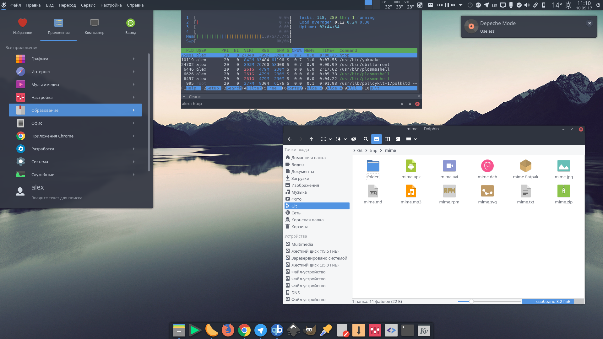
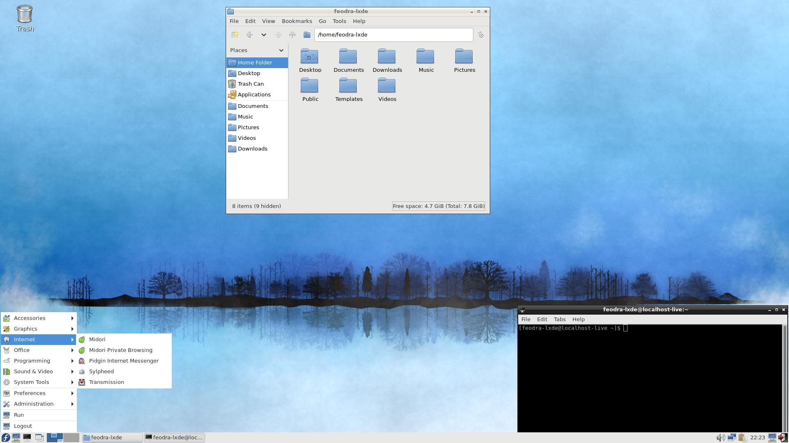
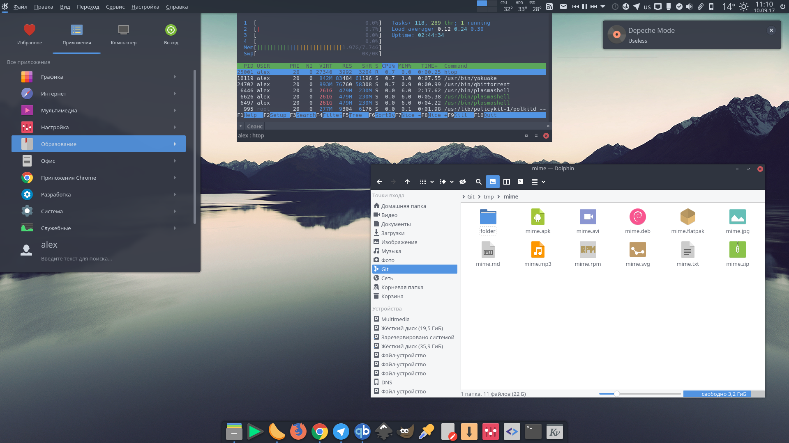
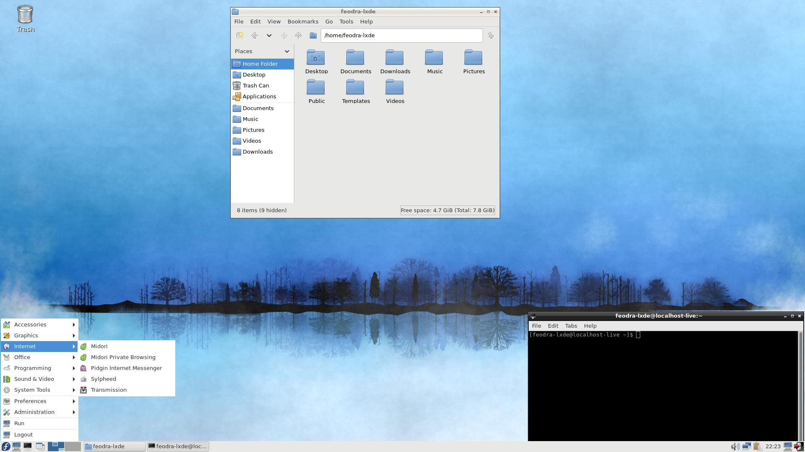

Case Study: Linux
Introductie

Unix

What we wanted to noteserve was not just a good environment in which to do programming, but a system around which a fellowship could form. We knew from experience that the essence of communal computing, as supplied by remote-access, time-shared machines, is not just to type programs into a terminal instead of a keypunch, but to encourage close communication.
Linux
Hello everybody out there using minix -
I’m doing a (free) operating system (just a hobby, won’t be big and professional like gnu) for 386(486) AT clones. This has been brewing since april, and is starting to get ready. I’d like any feedback on things people like/dislike in minix, as my OS resembles it somewhat (same physical layout of the file-system (due to practical reasons) among other things).
I’ve currently ported bash(1.08) and gcc(1.40), and things seem to work. This implies that I’ll get something practical within a few months, and I’d like to know what features most people would want. Any suggestions are welcome, but I won’t promise I’ll implement them :-)
Linus (torvalds@kruuna.helsinki.fi)
PS. Yes - it’s free of any minix code, and it has a multi-threaded fs. It is NOT portable (uses 386 task switching etc), and it probably never will support anything other than AT-harddisks, as that’s all I have :-(.
— Linus Torvalds

GNU/Linux


Grafische Omgeving
  
  


X11

(L)Ubuntu VM